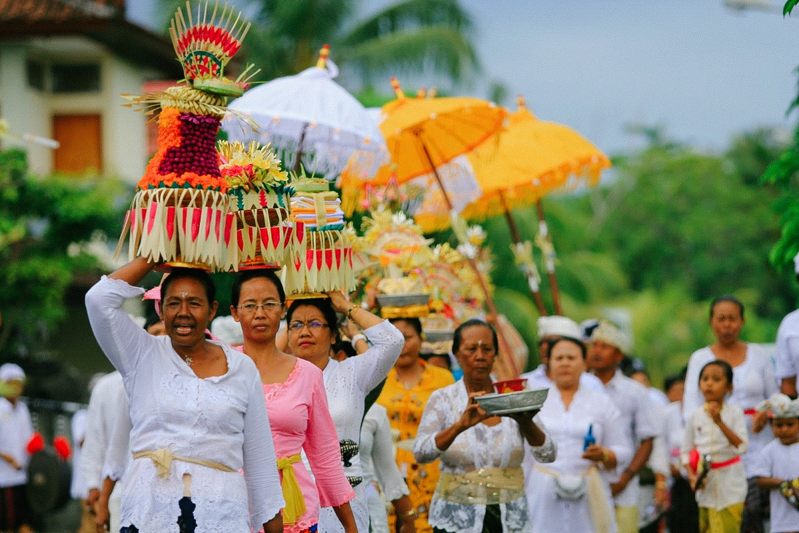
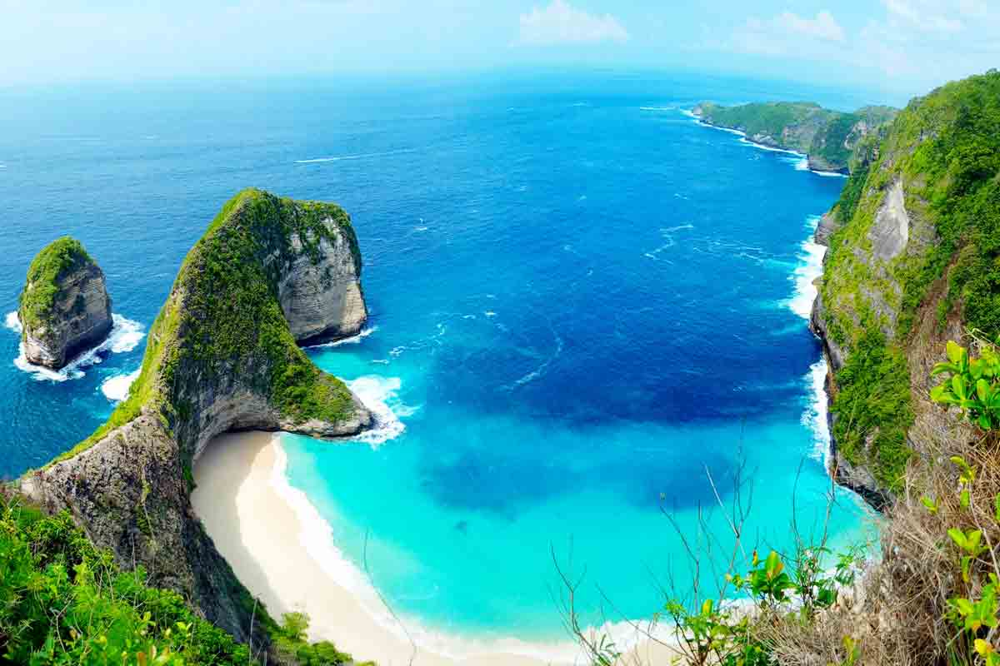
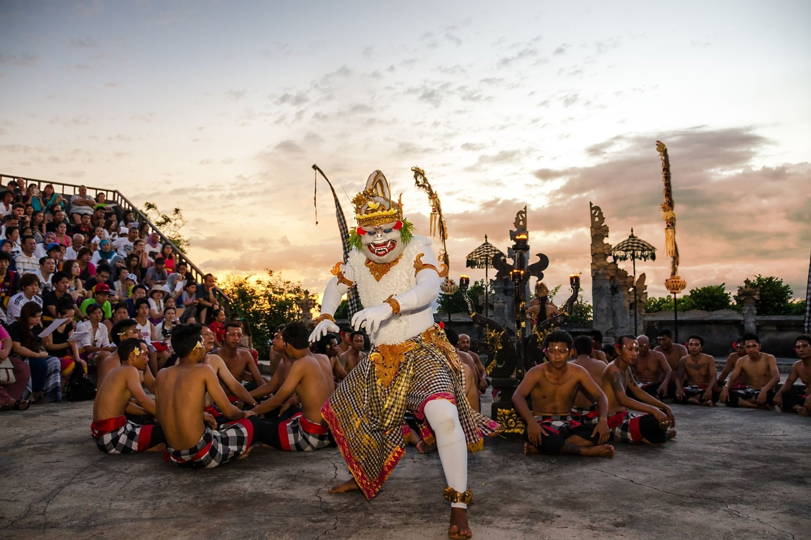

Sejarah

Nama Bali berasal dari kata "Wali" yang berarti persembahan atau korban suci dalam bahasa Sansekerta.
Pulau Bali memiliki sejarah panjang yang dimulai dari zaman prasejarah hingga menjadi pusat kebudayaan
Hindu-Jawa. Pada abad ke-8, Bali mulai dipengaruhi oleh kebudayaan Hindu dari Jawa, terutama pada masa
pemerintahan Raja Airlangga yang memperluas kekuasaannya hingga ke Bali.
Kerajaan Majapahit memiliki pengaruh besar terhadap Bali pada abad ke-14, ketika banyak bangsawan,
pendeta, dan seniman Jawa pindah ke Bali setelah kejatuhan Majapahit. Hal ini memperkaya budaya
Bali dengan tradisi Hindu-Jawa yang masih bertahan hingga saat ini. Bali kemudian menjadi pusat
kebudayaan Hindu di Nusantara dengan sistem kerajaan yang unik dan tradisi yang kuat.
Geografis

Pulau Bali terletak di antara Pulau Jawa dan Pulau Lombok, dengan luas wilayah sekitar 5.780 km².
Secara geografis, Bali berada pada 8°3'40"-8°50'48" Lintang Selatan dan 114°25'53"-115°42'40"
Bujur Timur. Pulau ini memiliki topografi yang beragam, dari dataran rendah di selatan hingga
pegunungan vulkanik di utara dan tengah, dengan titik tertinggi adalah Gunung Agung (3.031 m).
Bali memiliki iklim tropis dengan dua musim utama: musim kemarau (April-September) dan musim hujan
(Oktober-Maret). Pulau ini dialiri oleh beberapa sungai penting seperti Sungai Ayung, Sungai Petanu,
dan Sungai Unda. Sistem irigasi tradisional yang disebut "Subak" telah digunakan selama berabad-abad
untuk mengairi sawah-sawah berteras yang menjadi ciri khas lanskap Bali.
Wisata
Bali telah menjadi destinasi wisata internasional yang terkenal di seluruh dunia. Pulau ini menawarkan
kombinasi sempurna antara keindahan alam, budaya yang kaya, pantai-pantai eksotis, dan keramahan
penduduk lokal. Setiap tahun, jutaan wisatawan domestik dan mancanegara mengunjungi Bali untuk
menikmati berbagai atraksi wisata yang ditawarkan.
Kelingking Beach

Kelingking Beach merupakan salah satu destinasi wisata ikonik di Nusa Penida, Bali, yang terkenal dengan
pemandangan tebing berbentuk menyerupai tulang punggung dinosaurus. Dari atas tebing, pengunjung dapat
menikmati panorama laut biru jernih yang berpadu dengan pasir putih bersih di bawahnya. Pantai ini termasuk
dalam deretan pantai paling indah di dunia dan kerap menjadi spot favorit untuk berfoto. Akses menuju pantai
cukup menantang karena harus menuruni tebing curam, namun perjuangan tersebut akan terbayar dengan keindahan
alam yang masih alami. Kelingking Beach kini menjadi salah satu simbol keindahan Bali bagian timur dan
tujuan utama wisatawan yang datang ke Nusa Penida.
Kecak Uluwatu

Kecak Uluwatu merupakan salah satu pertunjukan tari tradisional Bali yang paling terkenal dan ikonik.
Dipentaskan di Pura Luhur Uluwatu, tarian ini memadukan kisah epos Ramayana dengan lantunan “cak-cak-cak”
dari puluhan penari laki-laki yang duduk melingkar. Dengan latar tebing tinggi Uluwatu yang langsung
menghadap Samudra Hindia, suasana pertunjukan semakin magis, terutama saat matahari terbenam. Selain menjadi
hiburan budaya, Kecak Uluwatu juga mencerminkan kekayaan tradisi dan spiritualitas masyarakat Bali yang
diwariskan turun-temurun.